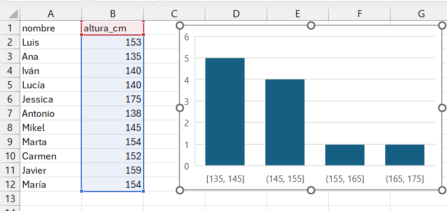
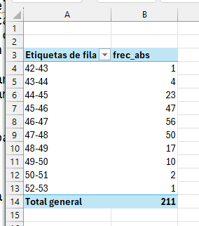
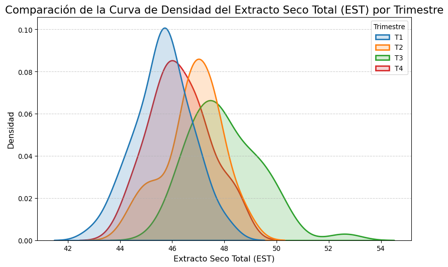
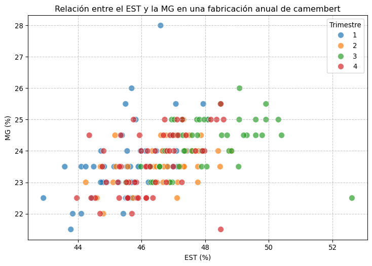
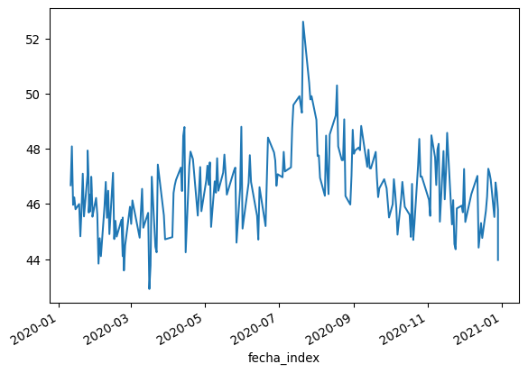
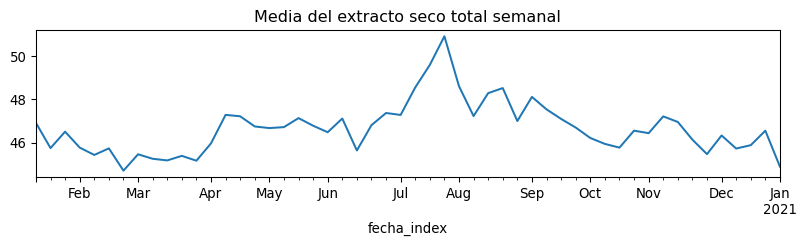
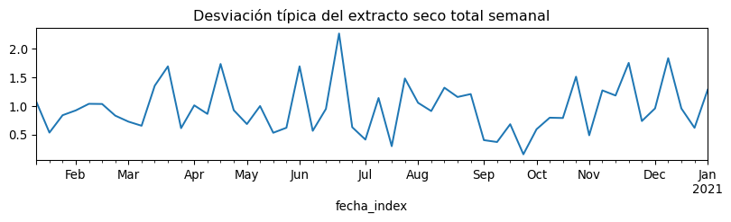
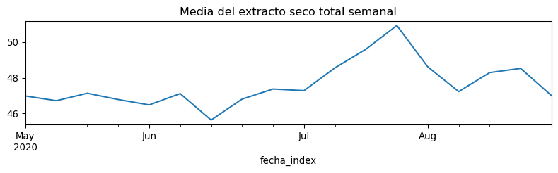

Una imagen vale más que mil palabras, y en el análisis de datos, la visualización es fundamental para entender patrones, distribuciones y relaciones en nuestros datos.
En este capítulo estudiaremos cómo describir conjuntos de datos de forma visual, utilizando varios tipos de gráficos distintos:
Tallo: Representa el grupo principal de los valores de los datos. Generalmente, se usa la parte más significativa del número. Por ejemplo, en el número 43, el tallo podría ser 4.
Hojas: Representan los dígitos finales o menos significativos de los valores de los datos. Siguiendo el ejemplo anterior, la hoja sería 3.
Construcción del diagrama en la hoja de cálculo
Supongamos que queremos medir la altura de un grupo de alumnos de nuestra clase. Éste es nuestro grupo:
Realizamos la medida de altura de cada persona y registramos los valores en una hoja de cálculo, siguiendo las buenas prácticas que hemos visto al estudiar los datos ordenados.
Vamos a utilizar los datos de medidas de altura de nuestro grupo de alumnos. Quitamos el último dígito a la derecha de nuestros valores y colocamos verticalmente los valores resultantes ordenándolos de menor a mayor, y evitando las repeticiones. Para evitar errores en la escala, debemos incluir los valores intermedios aunque no haya ninguno en nuestros datos (en el ejemplo, el valor 16 que correspondería a los 160). Esto forma el “tallo” de nuestro diagrama:
A continuación añadimos las “hojas” en la celda a la derecha, que consisten en los valores que hemos “cortado” de nuestro árbol, uno al lado de otro, incluyendo esta vez los valores repetidos, en orden de menor a mayor. Por ejemplo, para el valor 135, descartamos 13 y utlizamos 5; para el valor 138, descartamos 13 y utilizamos 8, y así sucesivamente para todos los valores.
Interpretación del diagrama de tallo y hojas
Tallo: Los números a la izquierda del símbolo | representan los valores base (o tallos), en este caso, las decenas de las alturas.
Hojas: Los números a la derecha del símbolo | representan los dígitos adicionales (o hojas). Por ejemplo, en la línea 13 | 58, el tallo es 13 (130), y las hojas son 5 y 8, que corresponden a los datos 135 y 138.
El diagrama nos dice que los valores en torno a 150 cm son los más frecuentes, y que hay un valor alto (175) que se separa un poco del resto.
La ventaja principal del stemplot es que mantiene los valores originales de las observaciones, y puede hacerse fácilmente con bolígrafo y papel, sin necesidad de más herramientas.
Su principal inconveniente es la elaboración manual (aunque lenguajes como R tienen funciones que lo contruyen de forma automática), y por lo tanto, la dificultad de aplicarlo a volumenes de datos medios o grandes. El uso generalizado de los ordenadores ha hecho que actualmente esta herramienta tenga muy poco uso, y se utilicen en su lugar otras más gráficas y de construcción automática, como el histograma.
6.2 Distribuciones de frecuencias
Una distribución de frecuencias es una tabla que muestra la frecuencia con la que ocurren los valores diferentes en un conjunto de datos. Esta herramienta es fundamental en la estadística descriptiva y permite resumir y visualizar cómo se distribuyen los datos de manera clara y comprensible. A partir de una tabla de frecuencias se pueden construir diagramas de barra o histogramas para visualizar la tabla de forma gráfica.
Para construir una distribución de frecuencias, agrupamos nuestros valores por intervalos, y contamos el número de observaciones que aparecen en cada intervalo. Los componentes de una distribución de frecuencias son:
las categorías o clases son los intervalos o valores específicos de los datos que se están analizando. Cada categoría representa un rango de valores en caso de datos continuos, o valores específicos en caso de datos discretos.
la frecuencia absoluta es un recuento simple de cuántas veces aparece cada valor en un conjunto de datos.
la frecuencia relativa nos muestra la proporción de cada valor frente al total. Puede expresarse como fracción (entre 0 y 1) o como porcentaje (respecto a 100), y se calcula como: \[
\text{Frecuencia Relativa} = \frac{\text{Frecuencia Absoluta}}{\text{Número Total de Observaciones}}
\]
la frecuencia acumulada nos dice cuántas observaciones están por debajo de un cierto valor.
la frecuencia relativa acumulada es la proporción de valores que están por debajo de un cierto valor
Construcción en Excel
La tabla a continuación muestra una distribución de frecuencias de las alturas de nuestro grupo de alumnos, calculada mediante una tabla dinámica de Excel.
6.3 Instrucciones paso a paso en Excel
Para crear una tabla de frecuencias de la variable altura_cm mediante tablas dinámicas en Excel, sigue estos pasos:
1. Selecciona los Datos
Abre tu archivo de Excel y selecciona toda la tabla que incluye los encabezados (nombre y altura_cm).
2. Inserta una tabla dinámica
Ve a la pestaña Insertar en la barra de herramientas de Excel.
Haz clic en Tabla Dinámica.
En el cuadro de diálogo que aparece, asegúrate de que el rango de datos seleccionado es correcto y elige dónde deseas colocar la tabla dinámica (en una nueva hoja de cálculo o en la hoja actual).
3. Añade la frecuencia absoluta
En el panel de campos de la tabla dinámica, arrastra el campo altura_cm a la sección Filas.
Arrastra nuevamente el campo altura_cm a la sección Valores.
4. Ajusta la configuración de valores
Haz clic en el campo altura_cm en la sección Valores.
Puedes renombrar los encabezados de la tabla para que sea más fácil de leer, rotulando las columnas, por ejemplo, como frec_absy frec_rel, o cualquier otro encabezado que te resulte claro y útil.
Construcción de una tabla de frecuencias en Python
import pandas as pdaltura_cm = [153,135,140,140,175,138,145,154,152,159,154]frecuencias = pd.Series(altura_cm).value_counts()print(frecuencias)
Con un poco más de código podemos hacer la tabla agrupando los valores en clases de amplitud 10, con las frecuencias absolutas y relativas. Es un poco más complicado, tómate tu tiempo para entender cada paso de las instrucciones.
import pandas as pdimport numpy as npaltura_cm = [153,135,140,140,175,138,145,154,152,159,154]serie = pd.Series(altura_cm)# Crear intervalos automáticamente con amplitud 10bins = np.arange(min(altura_cm)//10*10, max(altura_cm)//10*10+20, 10)# Agrupar y contartabla = pd.cut(serie, bins=bins).value_counts(sort=False)# Convertir a DataFrame con acumulados y relativosdf = tabla.to_frame(name='Frecuencia')df['Frecuencia acumulada'] = df['Frecuencia'].cumsum()df['Frecuencia relativa (%)'] = (df['Frecuencia'] / df['Frecuencia'].sum() *100).round(2)df['Acumulada (%)'] = df['Frecuencia relativa (%)'].cumsum()print(df)
üîπ Genera los l√≠mites de clase con amplitud 10: - min(altura_cm)//10*10: redondea hacia abajo el m√≠nimo a la decena más cercana. - max(altura_cm)//10*10 + 20: redondea hacia arriba el máximo y a√±ade 10 extra para incluir el último dato. - np.arange(...): crea un array de l√≠mites desde el m√≠nimo hasta el máximo, en pasos de 10.
üìå Ejemplo de salida: [130, 140, 150, 160, 170, 180]
tabla = pd.cut(serie, bins=bins).value_counts(sort=False)
üîπ Agrupa los datos en los intervalos definidos: - pd.cut(...): asigna cada dato a un intervalo. - .value_counts(sort=False): cuenta cuántos datos hay en cada intervalo, sin reordenarlos.
df = tabla.to_frame(name='Frecuencia')
üîπ Convierte la serie de frecuencias en un DataFrame con una columna llamada 'Frecuencia'.
üîπ Calcula el porcentaje acumulado, útil para análisis tipo Pareto.
print(df)
üîπ Muestra la tabla final con: - Intervalos - Frecuencia absoluta - Frecuencia acumulada - Frecuencia relativa (%) - Porcentaje acumulado
Como ves en el resultado, a veces se utilizan los símbolos ( y [ para definir los intervalos, tal como se hace en matemáticas.
Intervalo abierto: El símbolo ( se utiliza para denotar un intervalo abierto. El límite correspondiente no está incluuido en el intervalo.
Intervalo cerrado o semiabierto:El símbolo [ se utiliza para denotar un intervalo cerrado o semiabierto. EL límite correspondiente sí está incluido en el intervalo.
Ejemplos:
\((a, b)\) representa todos los números reales mayores que \(a\) y menores que \(b\) (excluye los valores \(a\) y \(b\)).
\([a, b]\) representa todos los números reales mayores o iguales que \(a\) y menores o iguales que \(b\) (incluye \(a\) y \(b\)).
\([a, b)\) representa todos los números reales mayores o iguales que \(a\) y menores que \(b\) (incluye \(a\), pero excluye \(b\))
\((a, b]\) representa todos los números reales mayores que \(a\) y menores o iguales que \(b\) (excluye \(a\), pero incluye \(b\)). :::
en Excel los pasos que hemos dado no están registrados y a la vista, y, por lo tanto, no son fácilmente revisables
en Python, todos los pasos y opciones que hemos utilizado están a la vista en el código del script
Si otra persona quisiera modificar la tabla, le sería fácil editar el código y relanzar el script, mientras que en Excel no sería fácil asegurarse de todos y cada uno de los pasos y clicks de ratón que hemos dado para construir y formatear la tabla.
Esta es una de las principales razones de la conveniencia del aprendizaje de Python incluso para las actividades más sencillas.
6.4 Ejercicio propuesto
En la tabla de frecuencias anterior, calcular frecuencia absoluta acumulada y frecuencia relativa acumulada en Excel, e incluirlas en la tabla como dos columnas adicionales. La frecuencia relativa acumulada nos permitirá crear diagramas de Pareto, muy útiles en los procesos de mejora de calidad.
6.5 Diagrama de barras
Cuando nuestra variable es discreta, podemos representar las frecuencias de cada valor de forma gráfica utilizando un diagrama de barras. Este diagrama utiliza barras rectangulares para representar la frecuencia de cada categoría.
Este gráfico es muy utilizado para representar, por ejemplo, resultados de encuestas, como el número de votos que han obtenido los diferentes partidos políticos en unas elecciones, o tablas discretas, como los kilos fabricados por meses en una fábrica.
Seleccionamos el rango de datos. Podemos hacerlo mediante un click en el encabezado de la columna de la variable altura_cm, en este caso, la columna B.
En la opción de menú Insertar, seleccionamos el icono Seleccionar gráficos de estadística
Seleccionamos Histograma

Excel calcula automáticamente la amplitud de los intervalos y el número de columnas; estas opciones pueden modificarse seleccionando con el botón derecho del ratón el elemento a modificar. En este caso, utilizamos estas opciones:
Eliminamos título del gráfico
Modificamos anchura de las barras seleccionando Dar formato a serie de datos, Opciones de serie, Ancho del rango= 50%
Modificamos los intervalos seleccionando el eje X: Dar formato al eje, Opciones de eje, Ancho del rango = 10
La descripción de los intervalos utiliza los mismos símbolos que hemos visto en las tablas de frecuencias de Python.
En el momento de escribir este manual, Excel no permite hacer histogramas múltiples ni agrupados por otra variable, por lo que para diseños más complejos, no hay más remedio que recurrir a otras opciones como las tablas dinámicas de Excel o, mejor aún, Python o R.
La tabla dinámica que hemos construido en Excel ha convertido nuestra variable continua, altura_cm, en una tabla de valores discretos, al agrupar los valores en intervalos. En Excel podemos representar las frecuencias absolutas de nuestra tabla gráficamente, insertando un gráfico de barras a partir de la tabla:
Con el cursor dentro de la tabla, seleccionamos la opción de menú Insertar
Insertamos un gráfico de barras
Opcionalmente, aplicamos las siguientes opciones de formato:
Hacemos click sobre uno de los botones del gráfico dinámico con el boton derecho del ratón, y seleccionamos la opción ocultar todos los botones del gráfico.
Eliminamos el título del gráfico
Abrimos el formato de la serie de datos, e introducimos en la opción Ancho del rango el valor \(50\%\) para ensanchar las barras.
Al utiizar la tabla dinámica para construir el gráfico, Excel utiliza las categorías de la tabla dinámica. Dado que estas categorías (los intervalos que ha formado la tabla dinámica) son discretas, Excel utiliza el resultado de la tabla dinámica para hacer el gráfico con un diagrama de barras. No es posible insertar un histograma a partir de una tabla dinámica.
Análisis de un caso real
El histograma muestra su utilidad cuando representamos la distribución de un conjunto de valores más grande que nuestros once alumnos. Veamos su aplicación a los datos diarios de una fabricación de queso camembert a lo largo de un año.Los datos de esta fabricación están en el fichero camembert.csv.
Seleccionamos el rango del extracto seco (columna est) e insertamos el histograma, ajustando el ancho de intervalo a \(1\) en las opciones de gráfico:
Con una agrupación de datos en intervalos de 1, esta es nuestra tabla dinámica:

En la figura siguiente vemos el histograma correspondiente a la tabla anterior, con un intervalo de clase de 1 punto de extracto seco total, y otras dos alternativas si el intervalo de clase fuese de 2 puntos o de de 0,5 puntos.
Siempre importamos ambas, ya que Seaborn a menudo usa funciones de Matplotlib para mostrar y personalizar los gráficos (como plt.title() para el título o plt.show() para mostrar el gráfico).
El texto siguiente incluye el código para crear el gráfico, no te preocupes si no lo entiendes a la primera, iremos explicándolo línea a línea.
Creación del histograma en Python
Las funciones de histograma de Python permiten construir el histograma directamente sin necesidad de hacer previamente una tabla de frecuencias (en realidad, la tabla de frecuencias se calcula internamente). Es mucho más sencillo utilizar estas funciones, ya que el código se simplifica mucho.
En la fase de exploración nos importa más entender estas propiedades de los datos (aspecto, forma de la distribución) que la precisión en la construcción del gráfico. La función básica .hist(), por su parte, es más sencilla de usar.
import pandas as pdimport seaborn as snsimport matplotlib.pyplot as plturl_datos ='https://raw.githubusercontent.com/juanriera/master-queseria/master/datos/camembert.csv'try: df = pd.read_csv(url_datos, decimal =",", sep=';', encoding='ISO-8859-1')exceptExceptionas e:print(f"Error al cargar el archivo: {e}")df["est"].hist() # histograma básico de matplotlib# Añadir título y etiquetasplt.title("Distribución del extracto seco total en una fabricación anual de camembert")plt.xlabel("Extracto seco total (est)")plt.ylabel("Frecuencia")# Mostrar el gráficoplt.show()
sns.displot(df["est"], kde =True)# Añadir título y etiquetasplt.title("Distribución del extracto seco total en una fabricación anual de camembert")plt.xlabel("Extracto seco total (est)")plt.ylabel("Frecuencia")# Mostrar el gráficoplt.show()
En este caso, vemos que la mayoría de los casos tienen valor cero. Es el caso de los recuentos de bacterias contaminantes, en el que la mayoría de los análisis tienen recuentos cero o muy bajos, y sólo en pocos casos tienen valores altos. Veremos con más detalle cómo tratar estas distribuciones má adelante.
6.8 Diagrama de caja o boxplot
Este gráfico fue creado por el estadístico John Tukey en 1977, y es una herramienta fundamental en la exploración de datos. Se basa en un grupo de medidas que se utiliza ampliamente en la descripción de conjuntos de datos, el conjunto de cuartiles. Si dividimos un grupo de datos ordenados en cuatro partes iguales, mediante tres puntos de corte, llamamos primer cuartil o \(Q1\) al valor que se situa en el 25%; segundo cuartil, o \(Q2\), al valor que se sitúa en el centro (50%), y tercer cuartil, o \(Q3\), al punto que se situa en el 75% de los datos. A estos tres valores añadimos el mínimo y el máximo, y tenemos un conjunto de cinco números que nos permiten describir la forma de la distribución de datos con cierta precisión. El segundo cuartil (\(Q2\)), que corresponde al 50% de los datos, se conoce habitualmente como mediana. El valor resultante de restar \(Q3-Q1\) es lo que se conoce como rango intercuartil o \(IQR\), y es una medida de la dispersión de la distribución de datos (mide la amplitud de la distribución).
Permite detectar posibles valores atípicos, representando los valores atípicos (outliers) que están lejos del resto de los datos (un valor es atípico si está más allá de (Q3 + 1.5 IQR) o (Q1 - 1.5 IQR).
La construcción de un diagrama de caja es como sigue:
Microsoft Excel no dispone de un diseño de gráficos de caja que sea práctico, por lo que recurriremos siempre a Python para realizarlos.
Excel no permite la representación de los gráficos de densidad; en Pythonlo hemos hecho arriba hacerlo con seaborn, añadiendo la funcion de densidad a un histograma añadiendo la opción kde = True.
Los gráficos de densidad son especialmente útiles cuando estamos comparando diferentes grupos de datos entre sí, por ejemplo en este caso comparamos el extracto seco total de nuestra fabricación de camembert trimestre a trimestre:

La curva de densidad nos permite visualizar la desviación que se produce por el verano (T3); son los valores que el boxplot nos ha mostrado como outliers.
Una alternativa al boxplot: el violin plot
El violin plot es una alternativa reciente al boxplot, tiene la ventaja de que muestra la densidad de la distribución superpuesta al boxplot, lo que permite visualizar con más claridad la distribución de los datos:
sns.violinplot(y='est', data=df)plt.show()
El violin plot, como el boxplot, se usan muy a menudo para comparar distribuciones de datos. Puedes comparar el gráfico de densidades por trimestres que hemos hecho antes con este violin plot múltiple por trimestres.
Si los puntos se agrupan a lo largo de una línea descendente, esto indica una correlación negativa (a medida que una variable aumenta, la otra disminuye).
Si los puntos forman una curva en lugar de una línea recta, esto sugiere una relación no lineal entre las variables.
La dispersión de los puntos puede indicar la variabilidad de los datos. Puntos que están muy lejos del patrón general pueden ser valores atípicos.
Representamos las variables esty mg de nuestros datos de la fabricación de camembert.
(a) Tabla de origen mostrando una parte de los datos seleccionados
Python nos permite separar el diagrama de dispersión en función de una tercera variable, en este caso, usremos el trimestre para ver lo que ha sucedido por el verano.
# Crear un diagrama de dispersión de sepal_length vs. sepal_widthplt.figure(figsize=(9, 6))sns.scatterplot(data=df, x='est', y='mg', hue='trimestre', s=80, alpha=0.7)plt.title('Relación entre el EST y la MG en una fabricación anual de camembert')plt.xlabel('EST (%)')plt.ylabel('MG (%)')plt.legend(title='Trimestre') # Mostrar leyenda para la especieplt.grid(True, linestyle='--', alpha=0.7)plt.show()

Como vemos, los gráficos de dispersión son una herramienta esencial en el análisis exploratorio de datos, ya que permiten visualizar relaciones y patrones en los datos, identificar correlaciones y detectar posibles anomalías. Esta información es crucial para realizar análisis estadísticos más profundos y tomar decisiones basadas en datos.
6.11 Gráficos de series temporales
Hasta ahora hemos utilizado gráficos y tablas que describen la estructura y forma de una variable, o las relaciones entre dos variables. Hay otros gráficos que tienen en cuenta la forma en la que esos datos cambian con el tiempo. En este caso, será necesario que hayamos recogido en una variable de nuestra tabla los intervalos de tiempo en los que se han producido nuestros valores.
6.12 Algunos ejemplos
proceso de llenado de envases de queso crema: se llena una tarrina cada 15 segundos. Nuestros datos deben recoger el tiempo y el peso.
nuestro fichero de fabricación de queso camembert recoge los valores analíticos medios diarios del producto fabricado.
Una fábrica recoge leche diariamente y analiza cada día la composición de la leche que entra en la fábrica.
En un gráfico de series temporales,
el eje horizontal (X) representa el tiempo. Los puntos de tiempo pueden ser minutos, horas, días, meses, años, etc.
el eje vertical (Y) representa los valores de la variable que se está estudiando. Estos valores pueden ser medidas como temperatura, ventas, precios, etc.
cada valor individual corresponde a un punto
los valores se conectan mediante una línea que conecta los puntos de datos, mostrando cómo cambian los valores de la variable a lo largo del tiempo.
normalmente, en un gráfico de series temporales no suelen representarse los puntos individuales para facilitar la legibilidad del gráfico.
En nuestro conjunto de datos de fabricación de queso camembert, la primera columna de la tabla recoge la variable fecha, lo que nos permite ordenar nuestros valores en el tiempo.
Cuando representamos valores en el tiempo, nunca usaremos el diagrama de barras, sino el gráfico de líneas.
Cómo hacer los gráficos de series temporales en Excel
Para hacer el gráfico en Excel, seleccionamos la columna este insertamos un gráfico de líneas. A continuación, con el cursor sobre el gráfico, pulsamos el boton derecho y seleccionamos la opción Seleccionar datos. Una vez abierto el cuadro de opciones, editamos las etiquetas del eje X y seleccionamos el rango de la variable fecha desde la fila 2 hasta la última.Aceptamos, y a continuación editamos el formato del eje Y para sustituir el valor mínimo de \(0\) por \(42\), que es el valor que queremos como mínimo para nuestro gráfico.
Tabla y gráfico de series
Gráficos de series temporales en Python utilizando pandas
En los procesos industriales, el manejo de datos que cambian con el tiempo (series temporales) es fundamental. Hablamos de registrar temperaturas en un proceso de cocción, el pH de una fermentación a lo largo de las horas o días, o la evolución de inventarios de productos perecederos.
Para abordar este análisis de manera eficiente y sencilla, la biblioteca pandas de Python es la herramienta de referencia. Su principal estructura, el DataFrame, está especialmente diseñada para entender y manipular datos etiquetados con el tiempo. Esto nos ofrece una serie de ventajas clave:
Fácil Indexación Temporal: Pandas permite que la fecha y hora sean el “índice” principal de los datos. Esto simplifica enormemente el filtrado (ej. “dame todos los datos del último turno”) y la selección por rangos (ej. “analiza solo el periodo de 9:00 a 11:00”).
Remuestreo (Resampling) Sencillo: Es habitual tener datos muy detallados (ej. una medición por minuto) y querer analizarlos a una escala mayor (ej. la media por hora). Pandas permite este cambio de frecuencia con una única función, lo que es vital para suavizar el “ruido” y ver la tendencia real del proceso.
Ventanas Móviles (rolling): Es la función estrella para la industria. Permite calcular promedios móviles o desviaciones estándar sobre un periodo de tiempo definido (ej. el promedio de temperatura de los últimos 15 minutos, o cada 15 minutos). Esto es crucial para el control de calidad y la identificación de anomalías o desviaciones en tiempo real.
En resumen, Pandas elimina las tareas de manipulación de datos tediosas, permitiendo a los profesionales de la alimentación centrarse en lo realmente importante: la interpretación de los datos para optimizar procesos, garantizar la seguridad alimentaria y mejorar la eficiencia.
Construyendo la serie temporal con pandas
Vamos a incluir de nuevo el código de lectura de los datos completo, para mayor claridad. Además, vamos a incluir una opción en la función de lectura del csv que formatea el campo fecha al formato que pandaspuede reconocer.
import pandas as pdimport seaborn as snsimport matplotlib.pyplot as plturl_datos ='https://raw.githubusercontent.com/juanriera/master-queseria/master/datos/camembert.csv'try: df = pd.read_csv(url_datos, decimal =",", sep=';', encoding='ISO-8859-1')exceptExceptionas e:print(f"Error al cargar el archivo: {e}")df.info()
Como fechase ha leído como object, la convertimos en fecha
df['fecha'] = pd.to_datetime( df['fecha'], format='%d/%m/%Y', errors='coerce'# Si hay una fecha inválida, la convierte a 'NaT' (Not a Time) en lugar de fallar.)
Verificamos que el contenido del dataframe es correcto
Ahora fechaya es datetime64 y pandaslo reconoce como campo de fecha. Verificamos el dataframe:
df.head()
fecha
fabricacion
est
mg
ph
cloruros
coliformes
0
2020-01-11
1
46.68
24.0
4.85
1.50
80.0
1
2020-01-12
1
48.09
25.0
4.67
1.61
0.0
2
2020-01-13
1
45.97
24.0
4.71
1.48
9200.0
3
2020-01-14
1
46.24
23.5
4.78
1.69
20.0
4
2020-01-15
1
45.81
23.0
4.77
1.56
150.0
Para utilizar las funciones de series de pandas es necesario crear una columna indexo índice y asignarla como index del dataframe; pandas utilizará el index para toda la gestión de las fechas de manera rápida y flexible.
La función .plot() nos representa los valores de la columna en orden secuencial, y toma las fechas del index de forma utomática, sin necesidad de explicitarlo:
df["est"].plot()plt.show()

Mediante las funciones de pandas, podemos reformatear las fechas remuestreando para hacer las medias semanales del extracto seco total. La función resample('W-MON') formatea las fechas para que las semanas empiecen en lunes, como es el caso en Europa (en USA la semana empieza el domingo). Aprovechamos para mostrar una de las potencias de Python: podemos hacer que varios cálculos se hagan a continuacion de los otros, simplemente enlazando las funciones, hasta el .plot()
plt.figure(figsize=(10.0, 2.0))df["est"].resample('W-MON').mean().plot(title="Media del extracto seco total semanal")plt.show()

Veamos a continuación otras formas de formatear la serie sobre la marcha, pero esta vez representando la desviación típicaen vez de la media.
plt.figure(figsize=(10.0, 2.0))df["est"].resample('W-MON').std().plot(title="Desviación típica del extracto seco total semanal")plt.show()

O podemos representar un período específico de la serie indicando a pandas los límites inferior y superior de las fechas que queremos.
plt.figure(figsize=(10.0, 2.0))df["est"]["2020-05":"2020-08"].resample('W-MON').mean().plot(title="Media del extracto seco total semanal");plt.show()

Por último, combinamos el gráfico de media y el de la desviación típica semanal en un único gráfico. Queda para el trabajo en clase ir buscando la explicación y comprensión de cada linea (sugerencia: copiar y pegar en Gemini el código y solicitar explicación detallada)
import pandas as pdimport matplotlib.pyplot as plt# --- 1. Preparación de los datos (Calculando la Media y la Desviación Típica Semanal) ---media_semanal = df["est"].resample('W-MON').mean()dt_semanal = df["est"].resample('W-MON').std()# --- 2. Creación de los Subgráficos (El paso clave) ---# Creamos una figura (conjunto de gráficos) con 2 filas y 1 columna.# El parámetro 'figsize=(10, 4)' controla el tamaño: 10 de ancho y 4 de alto total (como un gráfico normal).# 'sharex=True' asegura que ambos gráficos compartan el mismo eje temporal.fig, (ax1, ax2) = plt.subplots( nrows=2, ncols=1, figsize=(10, 4), sharex=True)# --- 3. Graficar la Media (Gráfico Superior) ---ax1.plot(media_semanal, label="Media Semanal", color='tab:blue')ax1.set_title("Media y Desviación Típica Semanal del Extracto Seco Total")ax1.set_ylabel("Media (est)")ax1.grid(True, linestyle='--', alpha=0.6)ax1.tick_params(labelbottom=False) # Quita las etiquetas de fecha/hora del gráfico superior# --- 4. Graficar la Desviación Típica (Gráfico Inferior) ---ax2.plot(dt_semanal, label="Desviación Típica Semanal", color='tab:orange')ax2.set_ylabel("D. Típica (est)")ax2.grid(True, linestyle='--', alpha=0.6)# Ajusta el espacio entre los gráficos para que no se superponganfig.tight_layout() plt.show()
Resumen
Los gráficos de series temporales son útiles para:
Identificar Tendencias:
Una tendencia es una dirección general en la que los datos se mueven a lo largo del tiempo. Puede ser creciente, decreciente o constante.
Detección de Estacionalidad:
La estacionalidad se refiere a patrones que se repiten en intervalos regulares de tiempo, como las ventas de productos estacionales.
Identificar Ciclos:
Los ciclos son fluctuaciones que ocurren en intervalos no regulares y pueden deberse a factores económicos o de otra índole.
Detección de Anomalías:
Los picos y caídas repentinas pueden indicar eventos inusuales o errores en los datos.
Los gráficos de series temporales son cruciales en diversas áreas:
Monitoreo de variables ambientales, datos meteorológicos y medidas científicas.
Negocios:
Análisis de ventas, demanda de productos y desempeño empresarial a lo largo del tiempo.
Los gráficos de series temporales proporcionan una visión clara y concisa de cómo cambian los datos a lo largo del tiempo. Esta visualización es fundamental para el análisis predictivo, la toma de decisiones y la identificación de patrones y anomalías en los datos.
Algunas sugerencias para la creación de gráficos